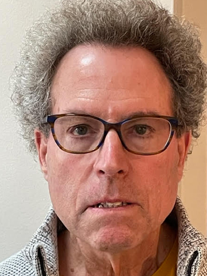
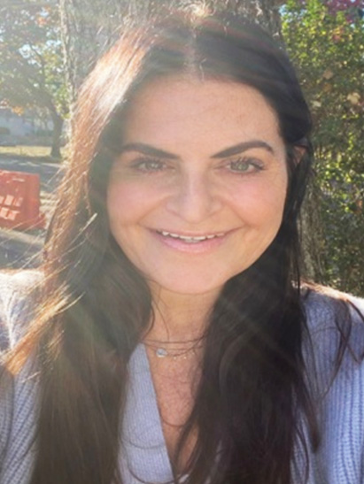
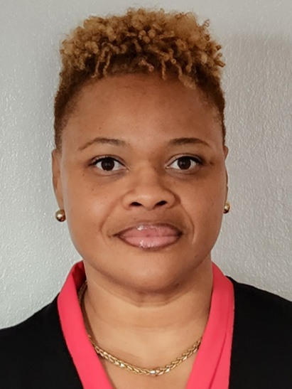
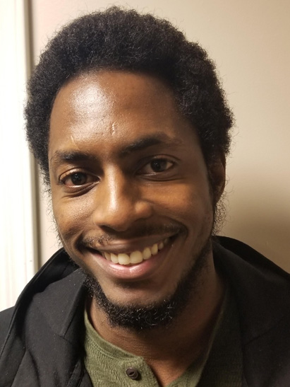

Lidia D. Abrams PhD, Executive Director
Resolve’s executive director and clinical supervisor is Dr. Lidia Abrams, PhD, licensed psychologist in New Jersey and New York, Diplomate of the Board of Rational Emotive/Cognitive Behavior Therapy, Fellow and Supervisor of the Albert Ellis Institute. Dr. Abrams has trained with the founder of rational-emotional behavioral psychology (REBT), Dr. Albert Ellis. She has co-authored articles and books on various topics in psychology. She has served on the board of New Jersey’s Association for Family and Conciliation Courts (AFCC) and continues to work on a committee to help improve family court processes in New Jersey. She is currently a member of the New Jersey Psychological Association’s Ethics committee. Dr. Abrams is Expert Witness for the Division of Child Protection and Permanency (DCPP) and serves as forensic evaluator for Union County Family Court. She was honored as person of special Value by the Union County Mental Health Association.
Debra FerroLMFT, PhD, Director of Clinical Training
Dr. Debra Ferro is a licensed Marriage and Family Therapist in New Jersey and has been providing services at Resolve for 10 years. She is a former elementary education teacher, having taught at the kindergarten and fifth grade levels. Dr. Ferro holds graduate degrees in Human and Organizational Psychology and Marriage and Family Therapy. She has also completed her doctoral degree in General Psychology. For her doctoral dissertation research, she explored the relationships between parenting styles, adolescent identity styles, and social media usage and addiction in young adults.
Dr. Ferro is an adjunct psychology professor at Union County College, teaching Child and Adolescent Psychology, as well as Life Span Development. She has been nominated for the Dr. Richard F. and Barbara Neblett Prize for Educational Excellence in Teaching and Learning.
She has presented to various audiences on adolescent stress and anxiety, stress management in the workplace and has been a guest lecturer on Emotionally Focused Therapy at Kean University. In addition, she has facilitated groups for children of divorce, social skills in middle school and parenting skills for children with special needs.
At Resolve Dr. Ferro carries a large caseload of individuals, families, and children/adolescents and is certified in Dialectical Behavioral Therapy (DBT). She also conducts custody and best interest evaluations, as well as visitation risk assessments and provides court testimony as necessary. In addition Dr. Ferro supervises a large number of interns and professionals working towards their license at Resolve.
Clinical Staff
-

Dominique Outlaw-Howell
PsyD – permitted psychologist -
Mary Ann Hill
LPC – Licensed professional counselor -
Lauren Picerni
LPC – Licensed professional counselor -

Richard Schilare
LCSW – Licensed clinical social worker -

Michael Taub
LPC, LCADC – Licensed professional counselor and addictions counselor -

Jonna Berman
LAC – Licensed associate counselor -
Sophia Cardoso
LAC – Licensed associate counselor -
Yohselyn Daniel Burns
LAC – Licensed Associate Counselor -
Kate Gullo
LAC – Licensed associate counselor -
Jennifer Hernandez
LAMFT – Licensed associate marriage and family therapist -
Laura Sevilla
LAC – Licensed Associate Counselor -
Sasha Ortiz
LAC – Licensed Associate Counselor -

Diane Wallace
LAC - counselor -

Jawann Westerman
MA- counselor -
Bracha Schechter
LAMFT – Licensed associate marriage and family counselor -
Stephie Degand
LAC – Licensed associate counselor -
Aileen Hernandez
MA -
Megan Malandro
LAC – Licensed associate counselor -
Veronica Julien
MA -
Allison Rossi
MA -
Katelyn Wells
LAMFT -
Lilly Manzo
LAC – Licensed associate counselor -
Amy Holland
LAC – Licensed associate counselor -
Katharine Gullo
LCSW – Licensed clinical social worker -
Nina Scalora
LAC – Licensed associate counselor -
Veronica Sauveur
LAC – Licensed associate counselor -
Alex Craig Mann
LPC, ABD
Interns
Resolve serves as internship site for several colleges and universities including Kean, Seton Hall, Rutgers, Montclair University, William Patterson, Fairleigh Dickinson, NYU, Chestnut Hill College and Capella. We provide internship opportunities for students in masters’ of counseling programs and doctoral programs in psychology. Our excellent reputation allows us to choose the most promising interns, who most often are hired to continue on at Resolve as counselors.